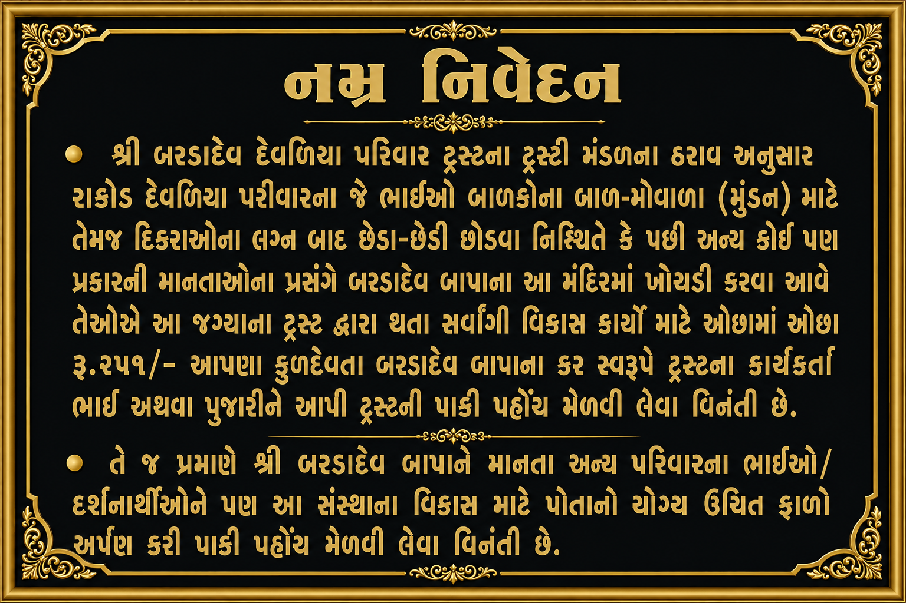

નમ્ર નિવેદન
શ્રી બરડાદેવ દેવળીયા પરિવાર ટ્રસ્ટના ટ્રસ્ટી મંડળના ઠરાવ અનુસાર સમસ્ત સમાજજનો માટે મહત્વપૂર્ણ વિનંતી.
રાઠોડ દેવળીયા પરિવારના ભાઈઓ દ્વારા બાવળીના બાળ-ગોપાળ (મુંડન), દીકરીઓના લગ્ન બાદ છેડા-છોડી વિધિ અથવા અન્ય માનતાના પ્રસંગે બરડાદેવ બાપાના મંદિરે પધરામણી વખતે ટ્રસ્ટના સર્વાંગી વિકાસ માટે ઓછામાં ઓછી રૂ. ૨૫૧/- ની ફાળવણી કરવી વિનંતી છે.
ફાળવણી ટ્રસ્ટના કાર્યકર્તા ભાઈ અથવા પુજારીશ્રીને આપી ટ્રસ્ટની પાકી પહોંચ અવશ્ય લેવી.
શ્રી બરડાદેવ બાપાને માનતા અન્ય પરિવારના ભાઈઓ અને દર્શનાર્થીઓને પણ સંસ્થાના વિકાસ માટે પોતાની શક્તિ મુજબ યોગ્ય દાનનો અંશ આપી પાકી પહોંચ લેવાની વિનંતી છે.
